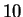
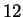
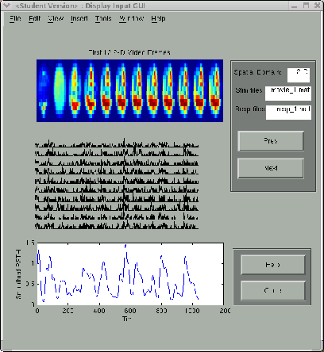
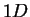
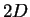

Next: Estimate
Up: Application of the STRFPAK
Previous: Calculation Parameter Window
Contents
For convenience, STRFPAK provides graphical display of the
input data in the Display Input window. The user can check whether
the selected input data is good or not for later estimation and analysis.
Figure 3.6 shows
spectrographic representation of the stimulus,  trials of neuron
response and its post-stimulus time histogram (PSTH) for the auditory example.
Figure 3.6:
Display auditory input data
 |
Figure 3.7 shows first  frames of natural scenes used in
the above visual example, one single trial
(since we have only one trial here)
and its PSTH.
Figure 3.7:
Display visual input data
|  |
In the figures, the left panel of the window is graphical display
of the stimulus, trials of spike trains and the smoothed PSTH.
- Plot of stimulus file:
If the dimensionality of the spatial domain is ,
x-axis is time (in seconds) and
y-axis is frequency in Hz.
If the dimensionality of
spatial domain is ,
the first video frames show up. For the current version of STRFPAK,
we only show the first frames.
- Plot of spike trains (in the sequence of time):
Note: We only display 10 trials for the current
version of STRFPAK.
If we have more than 10 trials, we display the first 10 trials.
- Plot of smoothed psth (in time domain):
Note: If we have single trail spike train, we take its
psth as itself. Otherwise, we compute the average of
multiple trials as their psth. The smoothed psth is computed as a
covariance between raw psth and a Hanning window.
The right panel shows information of the figures displayed in the left panel.
The user can choose prev or next button
to display different data sets
if multiple data pairs are selected.
The stimulus text field and the response text field and the
spatial-domain text field
show the corresponding input data pair files are displayed in the
left panel plots.
Next: Estimate
Up: Application of the STRFPAK
Previous: Calculation Parameter Window
Contents
2003-03-19